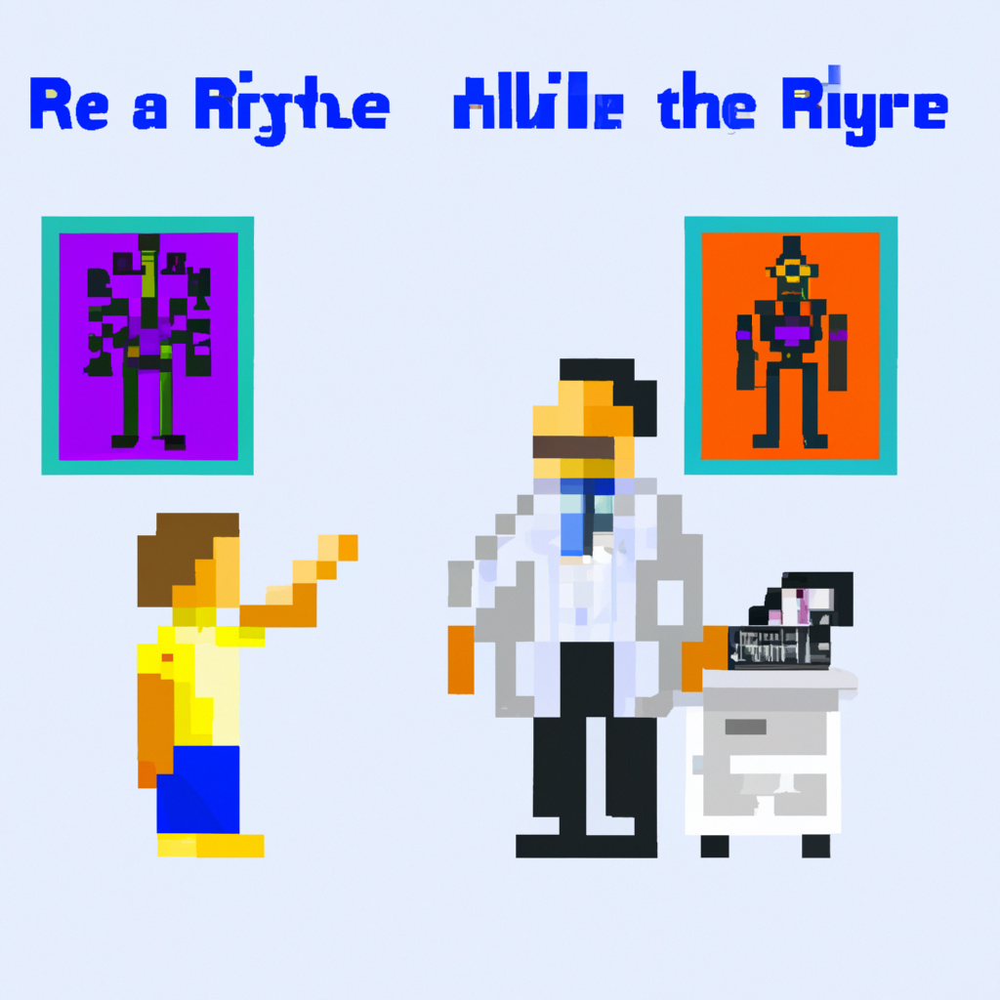

Why AI will never replace the radiologist
In recent years, Artificial Intelligence (AI) has become a hot topic in the field of medical imaging. In particular, AI techniques such as deep learning have been used to detect and diagnose diseases from medical images. While these techniques have shown promising results, there are still many challenges that need to be addressed before AI can replace radiologists in their job.
First of all, AI algorithms are only as good as the data they are trained on. This means that if the data is incomplete or inaccurate, the results of the AI will also be inaccurate. Furthermore, AI algorithms are not able to explain why they made a certain diagnosis, which is critical for radiologists in order to make the right treatment decisions.
Another major challenge is that AI algorithms are not designed to recognize or learn the nuances and complexities of medical imaging. For example, AI algorithms are not able to recognize subtle differences between two scans, which is essential for making the right diagnosis. Furthermore, AI algorithms cannot take into account the patient’s medical history or other factors that might affect the diagnosis.
Finally, AI algorithms are not able to think outside of the box and come up with creative solutions for difficult cases. Radiologists have to rely on their experience and intuition to find the best course of action.
In conclusion, AI algorithms may be able to detect and diagnose diseases from medical images, but they cannot replace radiologists in their job. AI algorithms are not able to think outside of the box and come up with creative solutions, nor are they able to take into account the nuances and complexities of medical imaging. Therefore, AI will never replace the radiologist.